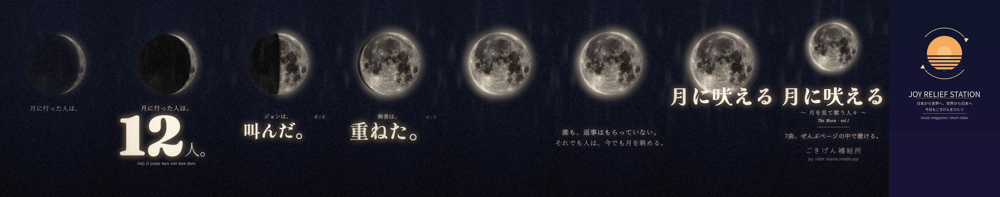
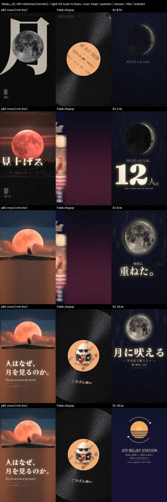

共有資料の一覧 ／ 確認ページ #204041 Fable｜宣伝S1「月に吠える」告知動画（19.5秒・縦）
#204041 Fable｜宣伝S1「月に吠える」告知動画（19.5秒・縦）
2026-11-01 実装・main合流・本番(GitHub Pages)反映まで実測確認
月の特集 vol.1「月に吠える 〜月を見て歌う人々〜」の告知動画を1本作り、Drive「AI制作物/Claude/Fable」に納品。型＝三日月が7人の動詞（踊った・叫んだ・歩いた…）で一段ずつ満ちて満月になり、無音の1拍のあと題字が一打で落ちる。写真は月1枚（CC BY-SA）だけ、音は全部自作、ケツロゴは最後の2.5秒だけ。モデル＝claude-fable-5-1。
② 数字
19.5秒長さ（ffmpeg -i で実測）
72 BPM拍（文字と音は同じ拍の表）
82点自己採点（80点未満は納品しない決まり）
100分かかった時間（21:45〜23:40・描画2回）
③ 実データでのスクリーンショット
流れ（0.9→18.6秒の9コマ）
頭・12人・動詞・満月・静かな2行・題字・ごきげん補給所・ケツロゴ
比較シート（左＝最低ライン p01・Fableシティポップ／右＝S1）
負けている所：絵の密度・2.5Dの奥行き・題字の大きさ
④ 押せるリンク
⑤ 何をどう確かめたか
| 確認項目 | 結果 |
|---|
| 縦1080×1920・30fps・音つき | ffmpeg で実測 |
| 13〜20秒 | 19.5秒 |
| ロゴはケツロゴだけ・最後だけ | 17.0〜19.5秒だけ（候補A・YouTube末尾と同一かは未確認） |
| 音は自作 | numpy で打ち込み（他人の録音・MIDI不使用） |
| 外部の生成サービス不使用・公開なし | 使っていない・投稿していない |
| 参照作と並べた比較シートを見てから採点 | hikaku_S1.png（下） |